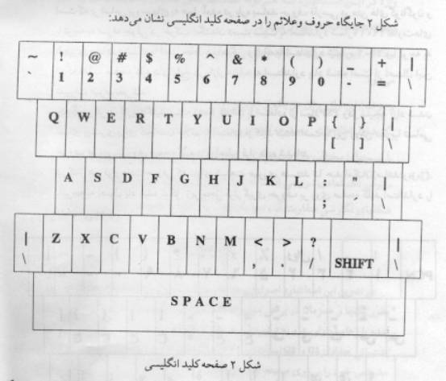

|
|
|
|
|
|
|
|
|
|
|
|
|
2901 |
|
|
|
|
|
|
|
طرز قرار گرفتن حروف و علائم زبان فارسي بر روي صفحه كليد كامپيوتر |
|
|
|
|
|
تجديد نظر اول |
|
چاپ سوم |


موسسه استاندارد و تحقيقات صنعتي ايران
موسسه
استاندارد و تحقيقات صنعتي ايران تنها سازماني است در ايران كه بر طبق قانون
ميتواند استاندارد رسمي فرآوردهها را تعيين و تدوين و اجراي آنها را با كسب
موافقت شورايعالي استاندارد اجباري اعلام نمايد. وظايف و هدفهاي موسسه عبارتست از:
(
تعيين، تدوين و نشر استانداردهاي ملي – انجام تحقيقات بمنظور تدوين استاندارد بالا
بردن كيفيت كالاهاي داخلي، كمك به بهبود روشهاي توليد و افزايش كارائي صنايع در
جهت خودكفائي كشور- ترويج استانداردهاي ملي – نظارت بر اجراي استانداردهاي اجباري
– كنترل كيفي كالاهاي صادراتي مشمول استانداردهاي اجباري و جلوگيري از صدور
كالاهاي نامرغوب به منظور فراهم نمودن امكانات رقابت با كالاهاي مشابه خارجي و حفظ
بازارهاي بين المللي كنترل كيفي كالاهاي وارداتي مشمول استاندارد اجباري به منظور
حمايت از مصرف كنندگان و توليدكنندگان داخلي و جلوگيري از ورود كالاهاي نامرغوب
خارجي راهنمائي علمي و فني توليدكنندگان، توزيع كنندگان و مصرف كنندگان – مطالعه و
تحقيق درباره روشهاي توليد، نگهداري، بسته بندي و ترابري كالاهاي مختلف – ترويج
سيستم متريك و كاليبراسيون وسايل سنجش – آزمايش و تطبيق نمونه كالاها با
استانداردهاي مربوط، اعلام مشخصات و اظهارنظر مقايسهاي و صدور گواهينامههاي لازم
) .
موسسه
استاندارد از اعضاء سازمان بين المللي استاندارد مي باشد و لذا در اجراي وظايف خود
هم از آخرين پيشرفتهاي علمي و فني و صنعتي جهان استفاده مي نمايد و هم شرايط كلي و
نيازمنديهاي خاص كشور را مورد توجه قرار مي دهد.
اجراي
استانداردهاي ملي ايران به نفع تمام مردم و اقتصاد كشور است و باعث افزايش صادرات
و فروش داخلي و تأمين ايمني و بهداشت مصرف كنندگان و صرفه جوئي در وقت و هزينه ها
و در نتيجه موجب افزايش درآمد ملي و رفاه عمومي و كاهش قيمتها مي شود.
|
كميسيون استاندارد كامپيوتر |
||
|
رئيس |
||
|
شركت
گسترهنگار |
ليسانس مهندسي
صنايع |
قاضي تبريزي -علي |
|
اعضاء |
||
|
مؤسسه
استاندارد و تحقيقات صنعتي ايران |
ليسانس مهندسي
الكترونيك |
اخوت-حسن |
|
شركت داده
پردازي |
فوق ليسانس
مهندسي كامپيوتر |
ارسنجاني-علي |
|
شركت
رايانهساز |
ليسانس مهندسي
كامپيوتر |
پارساپور-اسداله |
|
شركت مخابرات |
فوق ليسانس برق
و الكترونيك |
حسيني الست-حسن |
|
شورايعالي
انفورماتيك كشور |
فوق ليسانس
تكنولوژي اطلاعات |
خزاعي-ناهيد |
|
مؤسسه
استاندارد و تحقيقات صنعتي ايران |
فوق ليسانس
مديريت صنعتي |
سركارينژاد-نادر |
|
شركت
تاباالكترونيك |
ليسانس مهندسي
الكترونيك |
سينا-ويدا |
|
مؤسسه مطالعات
و تحقيقات فرهنگي ايران |
دكتر زبانشناسي
كامپيوتري |
عاصي-مصطفي |
|
شركت مشاورين
پارس سيستم |
ليسانس
كامپيوتر |
كتانچي-بهروز |
|
شركت سيبستان |
ليسانس مهندسي
عمران |
مهر-هومن |
|
شركت ايزايران |
ليسانس مهندسي
كامپيوتر |
نقابيان-عباس |
|
دبير |
||
|
مؤسسه
استاندارد و تحقيقات صنعتي ايران |
ليسانس علوم
كامپيوتر |
فصيحي-مريم |
فهرست مطالب
بسمه تعالي
پيشگفتار
استاندارد طرز قرار گرفتن حروف و علائم
زبان فارسي بر روي صفحه كليد كامپيوتر كه نخستين بار در سال 1367 تهيه گرديد بر اساس پيشنهادهاي
رسيده و بررسي كميسيون فني كامپيوتر براي اولين بار مورد تجديدنظر قرار گرفت و در
سومين جلسه كميته ملي استاندارد كامپيوتر مورخ 1373/6/7 تصويب شد اينك
باستناد بند 1
ماده 3
قانون اصلاحي قوانين و مقررات مؤسسه استاندارد و تحقيقات صنعتي ايران مصوب بهمن
ماه 1371
بعنوان استاندارد رسمي ايران منتشر ميگردد .
براي حفظ همگامي و هماهنگي با پيشرفتهاي
ملي و جهاني در زمينه صنايع علوم , استانداردهاي ايران در مواقع لزوم مورد تجديدنظر
قرار خواهند گرفت و هرگونه پيشنهادي كه براي اصلاح يا تكميل اين استاندارد برسد در
تجديدنظر بعدي مورد توجه واقع خواهد شد .
بنابراين براي مراجعه به استانداردهاي
ايران بايد همواره از آخرين چاپ و تجديدنظر آنها استفاده كرد .
در تهيه و تجديدنظر اين استاندارد سعي شده
كه ضمن توجه به شرايط موجود و نيازهاي جامعه حتيالمقدور بين اين استاندارد و
استاندارد كشورهاي صنعتي و پيشرفته هماهنگي ايجاد شود .
لذا با بررسي امكانات و مهارتهاي موجود و
اجراي آزمايشهاي لازم اين استاندارد با استفاده از منابع زير تهيه گرديده است :
- استاندارد ملي ايران شماره 820
- استاندارد ملي ايران شماره 2901
- استاندارد ملي ايران شماره 3342
محل قرار گرفتن نشانههاي فارسي بر روي صفحه
كليد كامپيوتر
پس از تهيه استاندارد كد تبادل اطلاعات فارسي 8 بيتي , كميسيون فني
استاندارد تصميم گرفت كه براي تكميل آن به استاندارد كردن نحوه قرار گرفتن علائم
زبان فارسي بر روي صفحه كليد كامپيوتر بپردازد .
هدف از اين امر آن بود كه علائم فارسي
تعيين شده در استاندارد كد تبادل اطلاعات 8 بيتي پشتيباني شود به اين معني
كه براي هر يك از نمادهاي تعريف شده در استاندارد ياد شده جايگاه مناسبي بر روي
صفحه كليد مشخص شود . در كنار اين مهم نكات ديگري نيز مورد توجه بوده كه براي
تأمين همه آنها مجموعهاي از چند اصل با اولويتهاي متفاوت توسط كميسيون فني تدوين
استاندارد وضع شد . كه در بخش اصول كار به تفصيل شرح داده خواهد شد .
كميسيون كليه مدارك و تحليهائي كه در اين
جلسات بر روي اين مسئله انجام پذيرفته را جمعآوري نموده و در اختيار صاحبنظران و
افرادي كه علاقمند به تجزيه و تحليل روش كار ميباشند قرار ميدهد .
1- هدف
هدف از تدوين اين استاندارد مشخص كردن
جايگاههاي قرار گرفتن نمادهاي الفباي فارسي بر روي صفحه كليد كامپيوتر بر اساس
جدول نمادهاي ارائه شده در استاندارد 3342 است ( نگاه كنيد به پيوست 1) .
2- دامنه كاربرد
در تمامي مواردي كه نياز به ورود اطلاعات
فارسي از راه صفحه كليد به كامپيوتر باشد اين استاندارد كاربرد دارد .
همچنين اين استاندارد ميتواند مبناي
تجديدنظر در استاندارد 820
براي ماشين تحريرهاي جديد ( كامپيوتري ) قرار گيرد .
3- تعاريف و اصطلاحات
- صفحه كليد : ابزاري است كه كاربر با كمك
آن ميتواند علائم و نشانهها يا متن موردنياز خود را وارد كامپيوتر كند .
- نماد : نماد به دو مفهوم و در برابر
واژههاي (Symbol)و به(character) كاربرده شده است .
اين واژه در اين استاندارد به هرگونه علامت قابل نمايش (Displayable) يا غير نمايش (Non-Displayable)
اطلاق ميشود.
-نشانه:
اين واژه براي هرنماد قابل نمايش( شامل حروف الفباء اعداد و علائم ويژه) بكار ميرود.
-حرف:
اين واژه براي هريك از حروف الفباء بكار ميرود.
-كد
تبادل اطلاعات: مجموعه كدهايي است كه هنگام تبادل اطلاعات ميان سيستمهاي مختلف يا
قسمتهاي مختلف يك سيستم ميتواند اطلاعات مورد نياز را مبادله نمايد.
-روش
تك نمادي: روشي است كه در آن براي هريك از حروف الفباي فارسي بدون توجه به شكلهاي
نگارشي متفاوت آن، تنها يك كد و يك شكل اختصاص داده ميشود.
4- اصول كار
در تدوين اين استاندارد اصول زير مدنظر
بوده است ولي از آنجائيكه رعايت همه اين اصول بطور يكجا و همزمان در برخي موارد
امكانپذير نبوده است لذا در اين گونه موارد اصول ياد شده با رعايت اولويت و به
ترتيب زير در نظر گرفته شده است :
4-1 پشتيباني جداول G1 و G2 استاندارد 3342 به گونهاي كه همه
نمادهاي جداول ياد شده جايگاه مشخص خود را بر روي صفحه كليد باز يابند .
4-2 حفظ هماهنگي و تشابه با استانداردهاي
820
و 2901
تا حد امكان .
4-3 تعيين جايگاه همه حروف الفباي
فارسي بر روي كليدهايي كه در همه صفحه كليدها يكسان و ثابت هستند , مانند تخصيص
كليد S براي حرف س فارسي و كليد A براي حرف ش فارس .
4-4 اختصاص دادن رديف اول كليدهاي
صفحه كليد تنها براي اعداد و نشانهها به دلايل زير :
- كاربرد كم نشانههاي ويژه , در اغلب
متنها ,
- رعايت همگوني ( نگاه كنيد به 4-5) نشانههاي صفحه كليد
فارسي و انگليسي .
با توجه به دلايل بالا رديف اول به اعداد
و نشانههاي ويژه اختصاص داده شد . در مورد نشانههاي ديگر اصل اختصاص جايگاه
يكسان براي نمادهاي مشابه در حد امكان رعايت شده است .
4-5 اختصاص جايگاههاي يكسان براي
نمادهاي مشابه در زبان فارسي و انگليسي تا حد امكان بطور مثال براي وارد كردن
علائم فارسي و انگليسي ( مانند< ) به سيستم كامپيوتر معمولا از يك صفحه كليد
استفاده ميشود لذا سعي گرديده كه علائم مشابه دو زبان بر روي صفحه كليد كامپيوتر
در جاي يكسان قرار گيرند .
4-6 توجه به بسامد ( فراواني )
كاربرد حروف فارسي در منتهاي متعارف براي تعيين تقدم آنها در اشتغال جايگاههاي
مناسبتر از نظر صرفهجوئي در حركت انگشتان دست , به گونهاي كه كرانههاي صفحه
كليد براي علائم و حروف داراي رتبه كمتر در نظر گرفته شود . لازم به يادآوري است
كه بر اساس بررسيهاي به عمل آمده درباره بسامد حروف فارسي در متنهاي گوناگون و با
توجه به صرفهجوئي در حركت انگشتان دست نسبت به استاندارد شماره 2901 تفاوتهاي ناچيزي
مشاهده شد كه با اصل حفظ هماهنگي و تشابه با استاندارد شماره 2901 و با توجه به اينكه
اغلب صفحه كليدهاي رايج در بازار مشابه به استاندارد ياد شده است از اعمال اين
تغييرات صرفنظر شد .
4-7 جايگزين كردن كاربرد كليد مبدله
(Shift Key) با استفاده از نماد PSP و در نتيجه آزاد شدن فضاي بيشتري براي گنجاندن علائم
با استفاده از كليد مبدله است . با اين روش تقريبأ تمامي حروف فارسي بر روي صفحه
كليدهاي اصلي قرار داده شدهاند .
4-8 در كنار هم قرار دادن حروفي كه
داراي شباهت صوري هستند تا حد امكان ( مانند : ر , ز , ژ .) با توجه به اصول ياد
شده شكل زير محل قرارگيري حروف بر روي صفحه كليد استاندارد را نشان ميدهند :

يادآوري 1: در مورد صفحه كليدهائي كه
توانائي توليد تركيب كليد مبدله با صفحه كليد فاصله را ندارند پيشنهاد ميشود
تركيب كليد مبدله با كليد " ذ " به عنوان جايگزين انتخاب شود .
يادآوري 2: دو نشانه " |\ " در محل
كليدهاي معادل انگليسي قرار ميگيرند . در شكل 1 جايگاه نشانههاي " |\ " در صفحه
كليدهاي گوناگون نشان داده شده است .
يادآوري 3:
نشانههاي (ﺓ, ﺃ,ﺇ , ﻲ ,ﺉ ؤ , ﮎ) مربوط
به جدول G2 استاندارد 3342
ميباشد .



پيوست
چگونگي نگارش شكلهاي ويژه حروف با
استفاده از صفحه كليد استاندارد
با توجه به اينكه استاندارد 3342 اصل تك نمادي بودن
حروف را براي تبادل اطلاعات به عنوان يك اصل كلي به كار گرفته است , صفحه كليد
استاندارد نيز ميبايست براي پيروي از استاندارد ياد شده همان اصل را بكار گيرد .
بنابراين براي نگارش متنها به صورت عام بايد حروف تشكيل دهنده واژهها بدون توجه
به شكل خاص جايگاه خود در واژه و يكي پس از ديگري وارد شوند .
به عنوان نمونه براي وارد كردن متن زير :
صفحه كليد فارسي
بايد كليدهاي زير بترتيب زده شوند :
ص ف ح ه SP
ك ل ي د SP ف ا ر س ي
همانگونه كه ديده ميشود مرز ميان واژهها
با زدن كليد فاصله (SPACE) مشخص ميشود و اين
اصل همواره بايد رعايت شود .
براي نگارش واژههائي مانند دانشآموز و
صومعه سرا بايد كليدهاي زير به ترتيب زده شوند :
د ا ن ش PSP
آ م و ز
ص و م ع ه PSP
س ر ا
همانگونه كه ديده ميشود براي ايجاد فاصله
در ميان واژه از نماد PSP استفاده ميشود .
لازم به يادآوري است كه اين نماد در صفحه كليد با دو روش زير قابل استفاده ميباشد
:
- كليد مبدله (Shift)
+ كليد فاصله
- كليد مبدله (Shift)
+ كليد ذ
براي وارد كردن شكلهاي گوناگون همزه به
روش زير عمل ميشود :
ئيدروژن .. ء PCN ي د ر و ژ ن ( همزه
آغازين )
مسئله .. م س ء PCN
ل ه ( همزه مياني )
تأليف ... ت ا PCN
ء ل ي ف ( همزه پاياني )
جزء ... ج ز ء ( همزه تنها )
لازم به يادآوري است كه براي وارد كردن
همزه از حروف همزهدار ( ﺃ,إ
, ؤ , ﺉ ) نيز ميتوان
استفاده كرد . از نمادهاي PCN و PSP براي نمايش شكلهاي گوناگون حروف در جايگاههاي غير
عادي نيز ميتوان استفاده كرد .
براي توضيحات بيشتر به پيوست د استاندارد 3342 مراجعه شود .
|
ISLAMC REPUBLIC OF IRAN |
|
|
|
Institute of Standards and Industrial Research of
Iran |
|
|
|
ISIRI NUMBER |
|
|
|
2901 |
|
|
|
|
|
|
|
Keyboard layout for Farsi : Characters in Computer |
|
|
|
|
|
First Revision |
|
Third Edition |